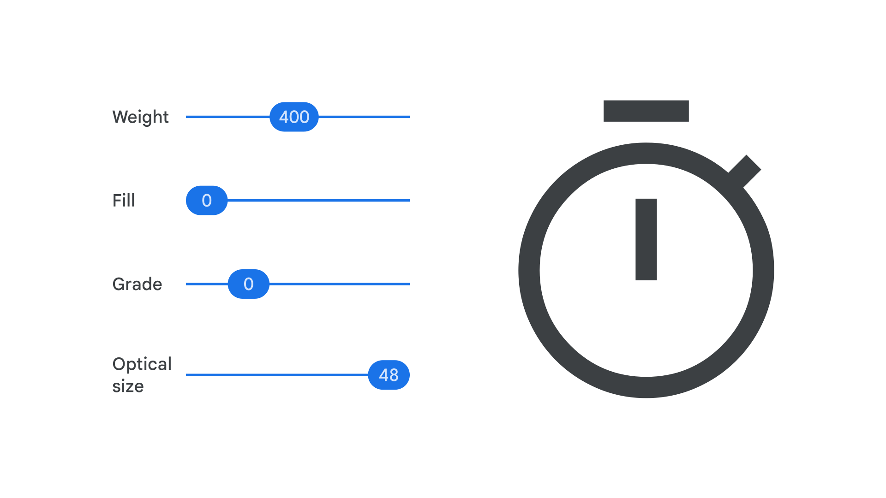

Material Symbols
By Google Fonts Knowledge contributors · Google Fonts Knowledge.
Original article · Source on GitHub · CC BY-SA 4.0. Text, illustrations and existing credits reproduced from the licensed Knowledge repository. Open Shelf adapted the layout and links; these adaptations are also CC BY-SA 4.0. No endorsement implied.
Google Fonts offers two collections as icon fonts: Material Icons and Material Symbols. The Material Symbols font is the variable version of the Material Icons font, combining over 2,000 glyphs into a single font file with a wide range of design variants, adjusted by variable axes.

Both Material Icons and Material Symbols support three styles: Outlined, Rounded, and Sharp. Material Icons also supports a two-tone and a filled version. However, the variable axes in Material Symbols allow for further refinement. The axes allow you to vary weight, fill, optical size, and grade. This fine level of control allows the icons to be adjusted to perfectly match any type they might sit alongside.
Material Symbols can also be incorporated into working design files thanks to the official Figma plugin.